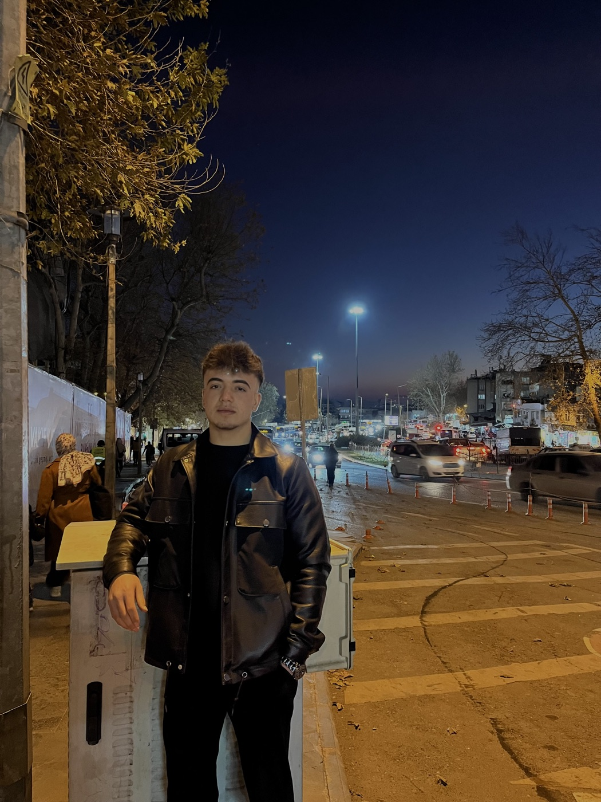
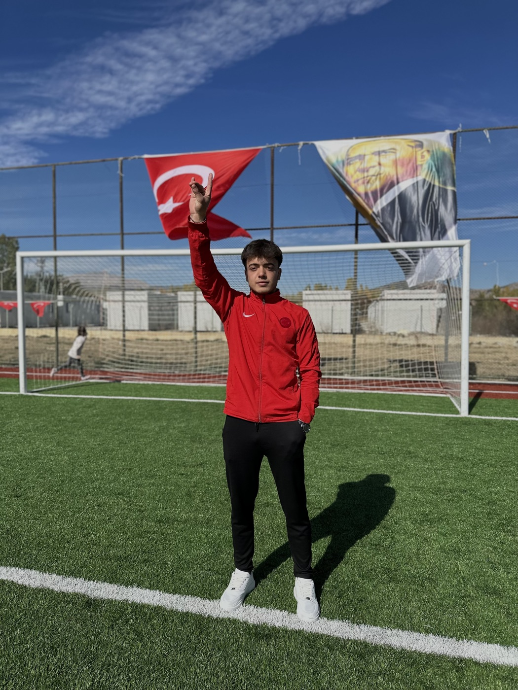
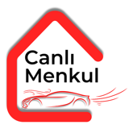

Ahmet Tilki
Mobil uygulama geliştiricisi ve girişimci · App Store ve Google Play'de altı uygulama
- Doğum tarihi
- 12 Ekim 2007 (18 yaşında)
- Doğum yeri
- Kahramanmaraş, Türkiye
- Meslek
- Girişimci, mobil uygulama geliştiricisi
- Uygulamaları
- CanlıPazar, CanlıMenkul, TOP10, Nanofy, Pedesta, Kubrivo
- Projesi
- Tilki
Ahmet Tilki kimdir?
Ahmet Tilki (d. 12 Ekim 2007, Kahramanmaraş), mobil uygulama geliştiricisi ve girişimcidir. App Store ve Google Play'de yayında olan altı uygulamanın kurucusu ve tek geliştiricisidir. Ürünlerinin fikir, tasarım, yazılım, mağaza yayını ve kullanıcı desteği süreçlerinin tamamını kendisi yürütmektedir.
Geliştirdiği uygulamalar tek bir yaklaşımı paylaşır: dar ve net bir sorunu, aracıya ihtiyaç bırakmadan çözmek. CanlıPazar, canlı hayvan ticaretini dijital bir pazar yerine taşıyarak üreticiyi alıcıyla doğrudan buluşturur; ilan vermek ücretsizdir ve satıştan komisyon alınmaz. Uygulama Google Play'de 5 binden fazla indirmeye ulaşmış, hayvancılık alanında Türkiye genelinde kullanılan bir platform hâline gelmiştir.
Aynı model farklı sektörlere de uyarlanmıştır. CanlıMenkul emlak, vasıta ve yedek parça ilanlarını tek uygulamada birleştirir. TOP10 ise toptan ticarete odaklanır ve tedarikçilerle kurumsal alıcıları bir araya getirir.
Portföyün diğer ucunda araç ve içerik uygulamaları yer alır. Nanofy, fotoğraf ve PDF dosyalarını tamamen cihaz üzerinde sıkıştırır; hassas belgelerin hiçbir sunucuya yüklenmemesi tasarımın temel ilkesidir. Pedesta, tek bir ürün fotoğrafını satış odaklı kısa bir videoya dönüştürerek küçük satıcının stüdyo ve prodüksiyon maliyetini ortadan kaldırır. Kubrivo ise türünde denenmemiş bir mekanik üzerine kurulu, sıfırdan yazılmış bir bulmaca oyunudur.
Hâlen üzerinde çalıştığı proje Tilki'dir: hastanelerde fiş alma ve vezne işlemlerini yapay zekâ desteğiyle dijitalleştiren bir kiosk sistemi. Hastayı doğru birime yönlendirmeyi, bekleme süresini tahmin etmeyi ve poliklinikler arasındaki yoğunluğu dengelemeyi amaçlar. Projenin ayırt edici tarafı erişilebilirliktir: 65 yaş üstü kullanıcılar için sadeleştirilmiş kullanım modu, sesle etkileşim ve sıra geldiğinde telefona iletilen titreşimli bildirim. Tilki'nin 2027'nin ilk yarısında kullanıma sunulması ve TEKNOFEST 2027 İnsanlık Yararına Teknoloji yarışmasında yer alması hedeflenmektedir.


Yayındaki uygulamalar
CanlıPazar
Pazar yeri · App Store & Google PlayBüyükbaş, küçükbaş, kanatlı ve evcil hayvan ilanlarının aracısız ve komisyonsuz yayınlandığı, Türkiye genelinde kullanılan dijital hayvan pazarı.

CanlıMenkul
Emlak, vasıta ve yedek parça · App StoreEmlak, vasıta ve yedek parça ilanlarını tek uygulamada birleştiren, ilan vermenin ve satışın komisyonsuz olduğu ilan platformu.
Nanofy
Araç · App Store & Google PlayFotoğraf ve PDF'leri istenen boyuta kadar küçülten, dosyaları hiçbir yere yüklemeden tamamen cihaz üzerinde çalışan uygulama.
Kubrivo
Bulmaca oyunu · App StoreÇekirdekleri yükleyip satırları patlatmaya dayanan "Resonance Burst" mekaniğiyle özgün, çevrimdışı bir bulmaca oyunu.
Pedesta
E-ticaret aracı · App StoreTek bir ürün fotoğrafını, satış odaklı kısa bir reklam videosuna dönüştüren uygulama. Arka planı siler, ürünü stüdyo veya podyum sahnesine yerleştirir, müzik ve fiyatla birlikte videoyu kurar.
TOP10
Toptan ticaret · Google PlayToptan alıcılarla tedarikçileri buluşturan pazar yeri. Tedarikçi ürünlerini listeler, kurumsal alıcı fiyat karşılaştırıp doğrudan iletişime geçer.
Geliştirilen projeler
Tilki
Sağlık teknolojisi · 2027 ilk yarı · TEKNOFEST 2027Hastanelerde fiş alma ve vezne işlemlerini dijitalleştiren, yapay zekâ entegreli akıllı cihaz. Bekleme süresini tahmin eder, hastayı doğru birime yönlendirir; 65 yaş üstü için sadeleştirilmiş kullanım ve sesli etkileşim sunar.
Yol haritası
- BugünAltı uygulama App Store ve Google Play'de yayında
- Eylül 2026Pedesta App Store'da yayına girdi
- 2027 · İlk yarıTilki'nin hastanelerde kullanıma sunulması
- 2027Tilki ile TEKNOFEST'e katılım